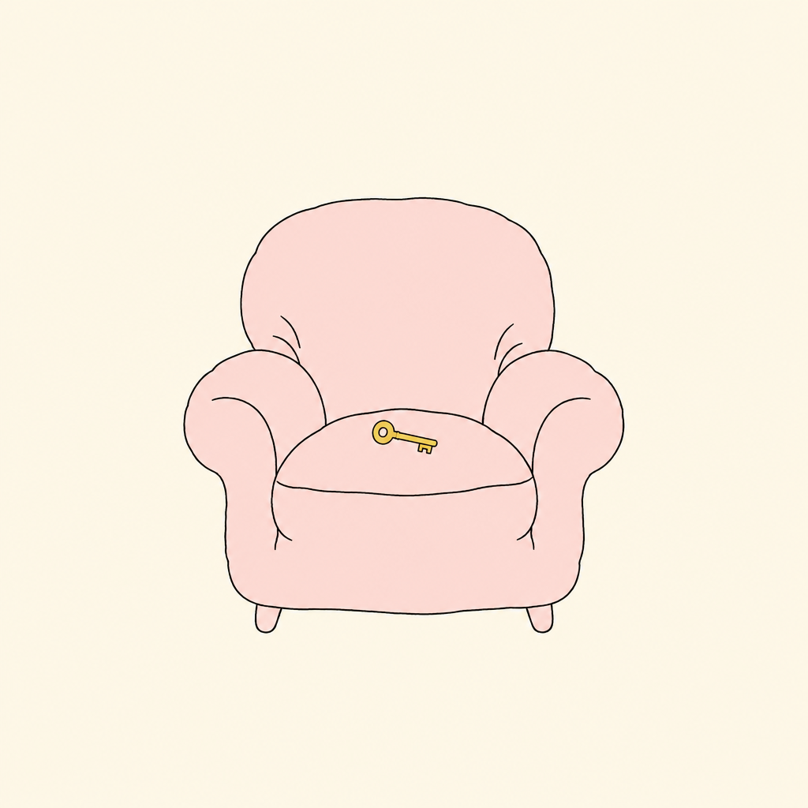
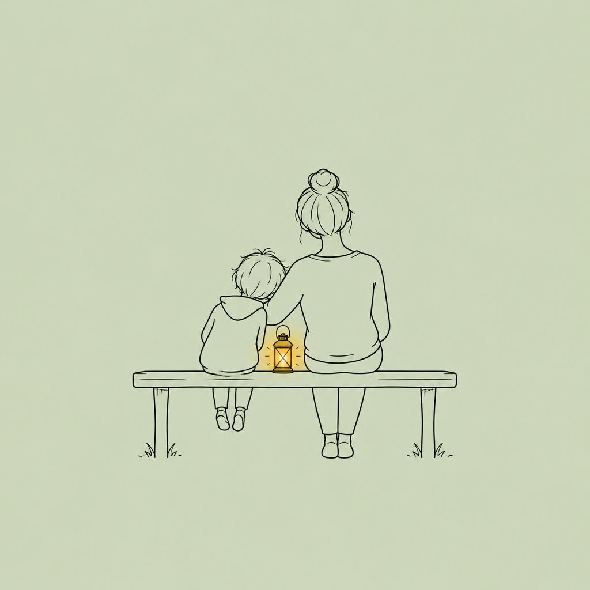
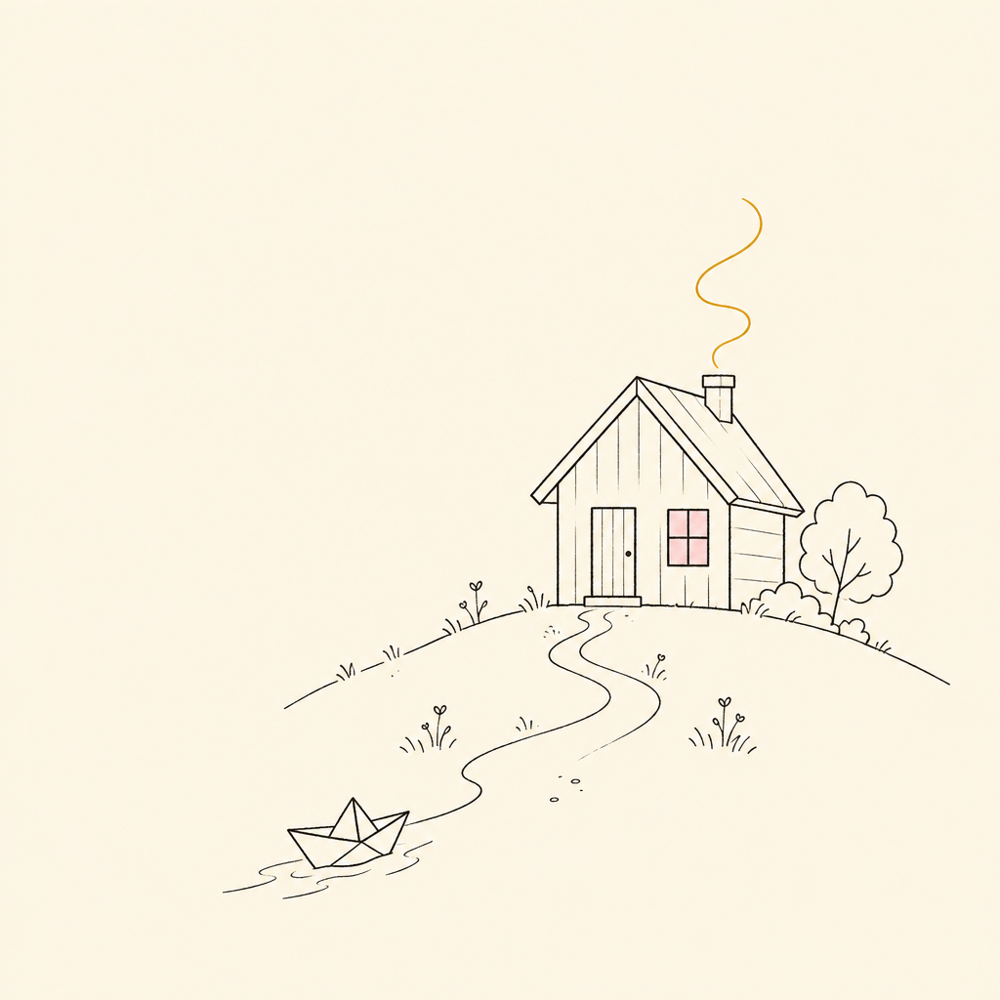
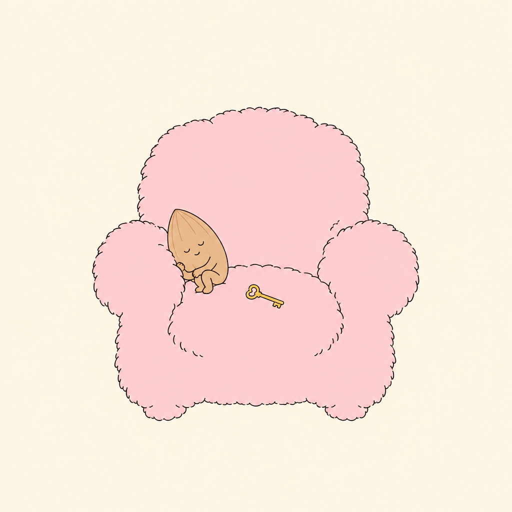
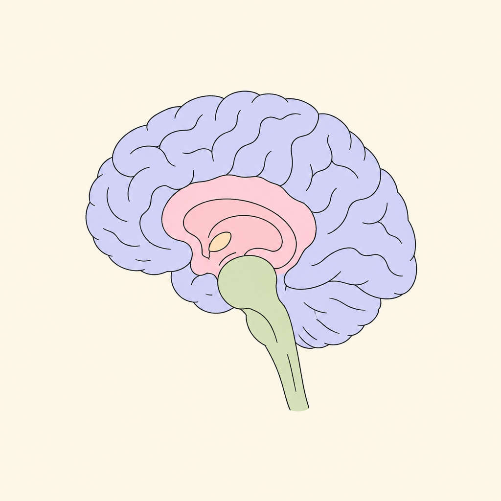

Ilustracje line-art z akcentem koloru – próbki
Trzy przykłady w stylu książki: cienki kontur, jasne tło i 1–2 akcenty kolorystyczne.

Fotel w kolorze bladego różu ze złotym kluczem – tło kremowe.

Rodzic z dzieckiem na ławce, akcent: ciepła latarenka – tło jasnozielone.

Domek na wzgórzu, akcenty: różowe okno i złota smuga dymu.
Sceny z książki – próba
Strażnik w kształcie migdała i uproszczone elementy mózgu według opisu.

Strażnik – postać w kształcie migdała – śpi na puchatym fotelu, pośrodku złoty klucz.

Uproszczony mózg: pień mózgu, układ limbiczny z ciałem migdałowatym i kora mózgowa.